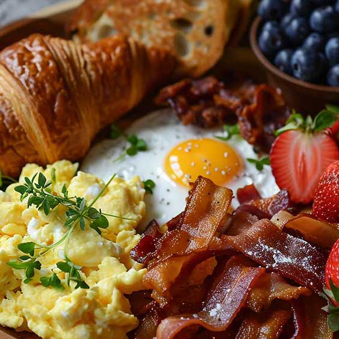
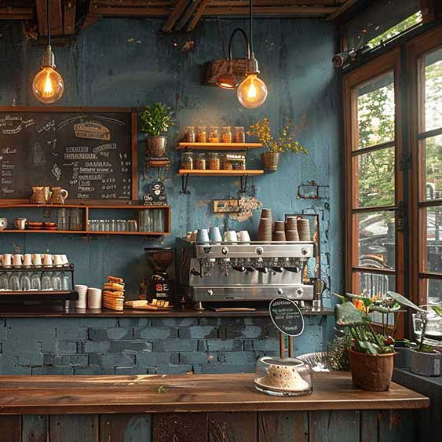
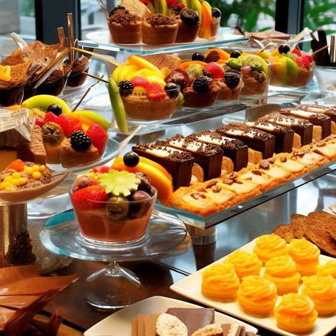

Galleryギャラリー






<!-- ここからgallery --> <section id="gallery" class="section"> <div class="contents"> <div class="gallery-box"> <h2><span class="hosoku">Gallery</span><span class="fade-in-text">ギャラリー</span></h2> <aside class="blur"><img src="images/bg_gallery.png" alt=""></aside> <div class="slide-thumbnail-box"> <div class="slide-thumbnail1"> <div class="img rtl"> <div><img src="images/gallery-1.jpg" alt=""></div> <div><img src="images/gallery-2.jpg" alt=""></div> <div><img src="images/gallery-3.jpg" alt=""></div> <div><img src="images/gallery-4.jpg" alt=""></div> <div><img src="images/gallery-5.jpg" alt=""></div> <div><img src="images/gallery-6.jpg" alt=""></div> </div> </div> <div class="slide-thumbnail1"> <div class="img ltr"> <div><img src="images/gallery-1.jpg" alt=""></div> <div><img src="images/gallery-2.jpg" alt=""></div> <div><img src="images/gallery-3.jpg" alt=""></div> <div><img src="images/gallery-4.jpg" alt=""></div> <div><img src="images/gallery-5.jpg" alt=""></div> <div><img src="images/gallery-6.jpg" alt=""></div> </div> </div> </div> </div> <!--/gallery-box--> </div> </section>
cssフォルダのstyle.cssから「/*ギャラリー」でテキスト検索してみて下さい。詳しい解説もあります。
「images/bg_gallery.jpg」です。お好みで入れ替えて下さい。サイズは自由で構いませんが端末サイズで配置バランスがかわるのでおかしくないような写真を選んで下さい。
4枚ですが１枚のpng画像（images/bg_gallery.png）になっています。psd画像も入ってますので編集できる方は活用して下さい。
画像は直接html側に配置されています。必ずaside要素で囲むようにして下さい。
スタイル設定はstyle.cssの「#gallery aside」で、場所の指示をしています。
style.cssの「.gallery-box」が主な設定箇所です。画像の指定もここにありますので変更してもらっても構いません。ただ、アスペクト比（縦と横の比率）を維持したい場合は崩れてしまうので、崩れてもおかしくない画像をご用意下さい。この画像分の高さは「--gallery-space」の数値で調整できます。小さくすれば曲線が少なめになります。
<span class="hosoku">で囲めば英語表記のような小さな文字になります。
<span class="fade-in-text">で囲めば以下のようなアニメーションテキストになります。
アニメーションテキスト
この「<span class="fade-in-text">」は他の部分にも使えますが、相性が悪いとおかしな動きになるので、おかしくならない所にだけ使うようにして下さい。
style.cssの「/*サムネイルスライドショー」とmain.jsの「サムネイルスライドショー」が主な設定コードです。
スピード設定はmain.jsで行います。
画像同士の余白はstyle.cssで行います。
当テンプレートでは右から左へスライドするタイプと、左から右へスライドするタイプの２セット使っています。どちらか一方だけにしてもらってもOKですし、さらに増やしてもらってもOKです。
※画像は各ブロックごとに最低2枚以上は配置して下さい。